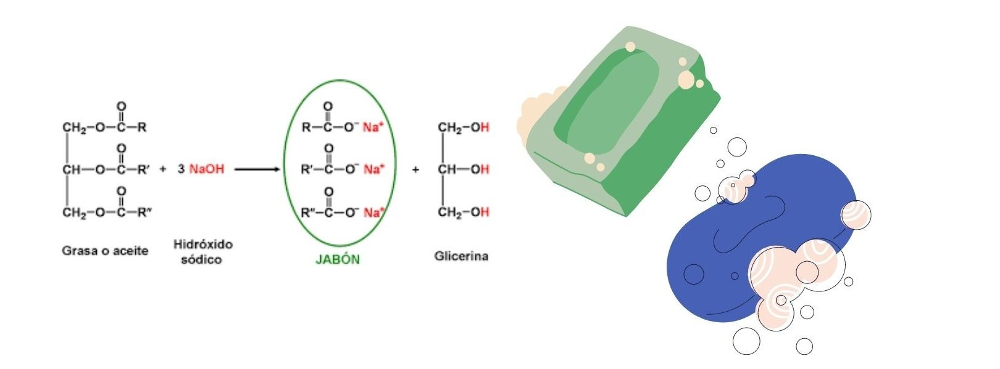
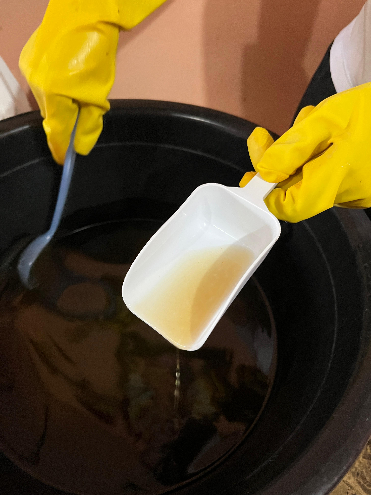

El presente proyecto consiste en la elaboración de jabón artesanal mediante el proceso
de saponificación usando hidróxido de sodio (NaOH). El objetivo principal es comprender,
de manera práctica, cómo ocurre esta reacción química y cómo se transforma una mezcla de
grasas o aceites en un producto útil y seguro para la higiene personal.
Objetivos específicos:
Reconocer el papel del NaOH como base fuerte en la reacción de saponificación.
Analizar los cambios físicos y químicos que ocurren durante el proceso.
Aplicar mediciones precisas para asegurar un producto final equilibrado.
Desarrollar habilidades de manipulación segura de reactivos corrosivos.
Marco teórico:
La saponificación es una reacción química de tipo hidrólisis básica, en la cual los
triglicéridos (grasas o aceites) reaccionan con una base fuerte (en este caso, NaOH)
para producir glicerina y jabón, que son sales sódicas de ácidos grasos.
La ecuación general de la reacción puede representarse como:
Este proceso es exotérmico y requiere precaución, ya que la disolución del NaOH en agua libera gran cantidad de calor.
Históricamente, el jabón se elaboraba con cenizas (fuente de hidróxido) y grasas animales, siendo un producto fundamental
para la higiene. Hoy en día, el jabón artesanal sigue siendo apreciado por sus propiedades humectantes y por no contener aditivos
sintéticos agresivos.

Conceptos clave:
Base fuerte: Sustancia que libera iones hidroxilo (OH⁻) en solución y neutraliza ácidos.
Triglicéridos: Moléculas formadas por glicerol y tres ácidos grasos.
Reacción exotérmica: Proceso que libera energía en forma de calor.
Curado del jabón: Período de reposo que permite completar la reacción y evaporar el exceso de agua.
Procedimiento experimental:
Materiales:
NaOH (sosa cáustica).
Aceite comestible usado o nuevo (colado y libre de suciedad) 1L.
Agua.
Aroma de eucalipto.
Recipiente resistente al calor.
Cuchara de plástico de 15 ml (para la experiencia en casa).
Balanza de dos platillos (usada en el laboratorio para medir la sosa con precisión).
Batidor o paleta de madera/plástico.
Moldes para jabón.
Guantes y gafas de seguridad.
Diferencias entre laboratorio y casa:
En el laboratorio, la medición del NaOH se simulo con bircabonato de sodio y una balanza de dos platillos para obtener valores exactos en gramos.
En casa, se replicó el experimento usando una cuchara de plástico de 15 ml como referencia por falta de la balanza de dos platillos,
lo que resultó menos preciso pero suficiente para fines demostrativos.
Balanza de dos brazoscuchara de 15ml
Pasos:
Preparación de la solución de NaOH: En un recipiente resistente, se vertió cuidadosamente el NaOH en el agua (nunca al revés) para evitar reacciones violentas. Se observó una liberación inmediata de calor y vapor.
Sosa y aguaDisolviendo la sosa
Mezcla con aceite: Una vez que la temperatura bajó un poco, se incorporó el aceite, comenzando a agitar de forma constante.

Virtiendo aceite en la sosaRevolviendo y incorporando
Espesamiento: La mezcla fue cambiando de aspecto, pasando de líquida a una textura más cremosa.
Textura dela mezclaEspesando la mezcla
Adición de aroma: Se incorporó la fragancia de eucalipto. Aunque el olor mejoró, aún quedaba un fondo perceptible del olor fuerte del NaOH.
Añadiendo Aroma
Moldeado: La mezcla se vertió en moldes y se dejó reposar.
Viritendo mezcla en los moldesMezcla vertida en los moldes
Curado:El jabón se dejó secar durante varias semanas, lo que permitió que adquiriera mayor dureza y un aroma más agradable.
Resultado finalJabones en reposo
Observaciones, análisis y conclusiones
Observaciones:
Al verter el NaOH en el agua, se produjo un aumento rápido de temperatura, burbujeo y liberación de vapores, evidenciando la naturaleza exotérmica de la disolución.
El olor inicial era fuerte y penetrante, típico de un compuesto alcalino, provocando una ligera irritación en la nariz si se acercaba demasiado.
La mezcla con el aceite generó un cambio de color y consistencia, pasando de un tono amarillento a una emulsión más opaca y uniforme.
Durante la agitación, se observó cómo aumentaba la viscosidad, señal de que la saponificación estaba en marcha.
La fragancia de eucalipto suavizó el olor, pero en la etapa inicial seguía presente un matiz alcalino.
Con el paso de los días de curado, el jabón adquirió mayor dureza, el aroma se volvió más fresco y agradable, y la textura se hizo más firme y compacta.
Quedaron 3 estilos de Jabones:
Estilo 1Estilo 2Estilo 3
Análisis y explicación científica:
La saponificación observada es consecuencia de una reacción ácido-base en medio básico, donde el NaOH rompe los enlaces éster de los triglicéridos, liberando glicerina y formando las sales sódicas (jabón).
La liberación de calor en la disolución del NaOH es un fenómeno exotérmico causado por la alta energía liberada al hidratar los iones sodio e hidróxido.
El olor desagradable inicial se debe a compuestos volátiles y al NaOH no neutralizado, que desaparecen tras el curado. Este proceso también endurece el jabón y mejora su estabilidad, asegurando que no queden
restos de sosa libre que puedan dañar la piel.
Conclusiones:
El experimento demuestra la importancia de las mediciones precisas para obtener un jabón balanceado y seguro.
La manipulación del NaOH exige medidas de seguridad estrictas y un orden riguroso en el procedimiento.
El curado es esencial para garantizar un aroma agradable y un producto libre de sosa residual.
La experiencia permitió aplicar conocimientos de química en un contexto práctico, reforzando conceptos como reacciones ácido-base, exotermicidad y la importancia del tiempo en procesos químicos.